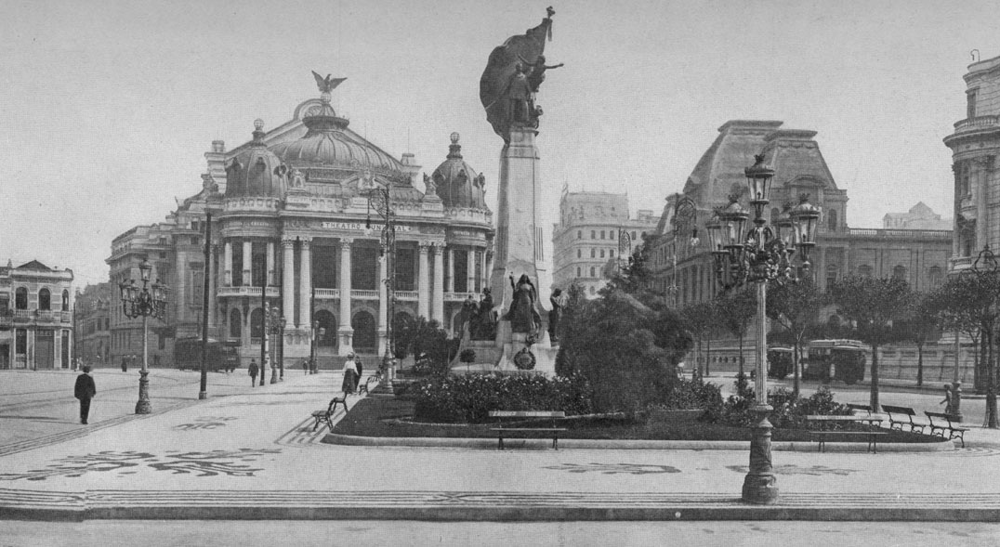
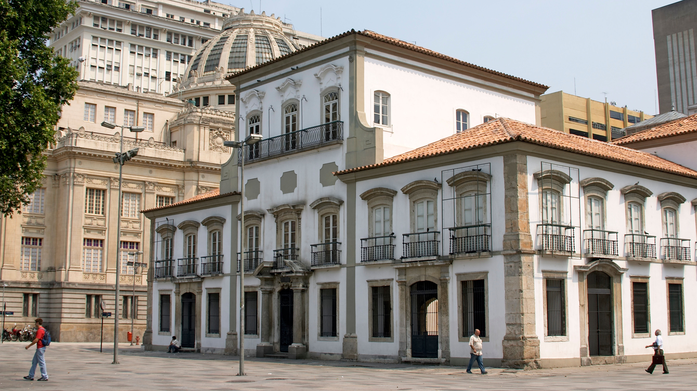

O Rio já fez parte de uma colônia francesa
1555, financiado pelo rei Henri II, o aristocrata Nicolas Durand de Villegagnon fundou o Forte Coligny em uma das ilhas na Baía de Guanabara: era o começo da efêmera colônia França Antártica, uma base militar importante nas Américas e um refúgio para os protestantes então perseguidos na França.

Foi a capital de um dos maiores impérios do mundo
O que poucos sabem é que o Rio foi não apenas a capital do nosso próprio país, mas também de um império global: quando a Família Real portuguesa e a sua corte se mudaram para o Brasil, em 1808, fugindo das tropas de Napoleão, a cidade foi transformada em capital do Reino de Portugal e de seu vasto império ultramarino.